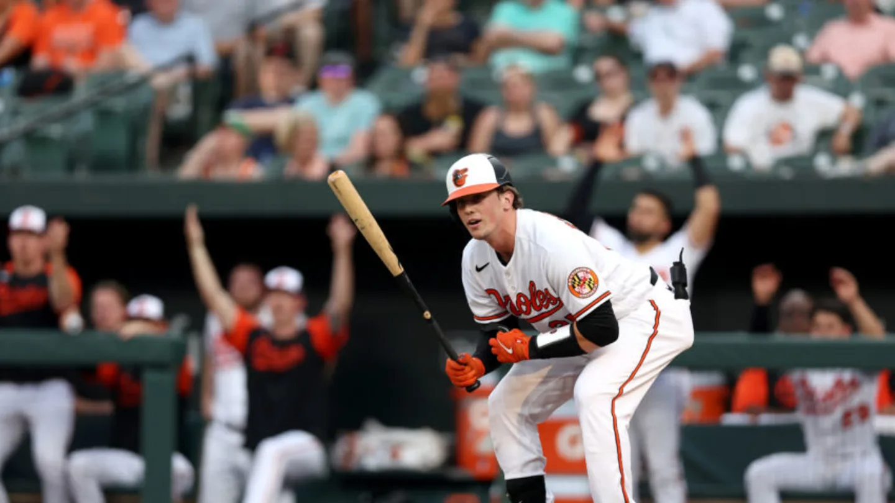

My Adley Rutschman Fan Page

Adley Rutschman is a top three catcher in the MLB, and he's only 24 years old.
He is him.
Check out his Baseball Reference Page.
Important Information:
-
Date of Birth: February 6, 1998
-
Place of Birth: Portland, Oregon
-
Job: God behind the plate
Top Three Favorite Moments:
- MLB Debut
- First hit
- First home run

Rookie Year Stats:
-
Games: 113
-
Hits: 101
-
Doubles: 35
-
Home Runs: 13
-
RBI: 42
-
Stolen Bases: 4
-
Batting Average: .254
-
On-Base Percentage: .362
-
Slugging Percentage: .445
-
On-Base Plus Slugging Percentage .806
To check out his career highlights, click here.